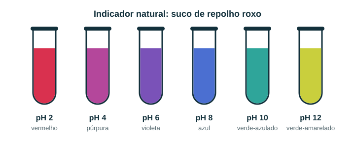

De onde vem o “p”?
O pH foi proposto em 1909 pelo químico dinamarquês S. P. L. Sørensen, no laboratório da cervejaria Carlsberg, para controlar a acidez em processos com enzimas.
Início › Curiosidades
O pH está em toda parte: no corpo, no jardim, no mar e na cozinha. Filtre por tema e depois faça o experimento do repolho roxo.
14 curiosidades
O pH foi proposto em 1909 pelo químico dinamarquês S. P. L. Sørensen, no laboratório da cervejaria Carlsberg, para controlar a acidez em processos com enzimas.
Como a escala é logarítmica, pH 3 tem 100 vezes mais H⁺ do que pH 5, e não “duas unidades” a mais.
A 37 °C, a água pura é neutra em pH ≈ 6,8. Por isso o sangue, a 7,4, é levemente alcalino na temperatura do corpo.
Vem do árabe al-qali, “as cinzas”. Cinzas de plantas, ricas em carbonatos, eram usadas para fazer sabão.
Na água, o H⁺ se move muito rápido por um mecanismo de saltos entre moléculas (mecanismo de Grotthuss), em vez de viajar “inteiro” de um ponto a outro.
Comprimidos efervescentes usam a mesma reação do limão com bicarbonato: ácido + HCO₃⁻ → H₂O + CO₂. As bolhas são gás carbônico.
O suco gástrico com pH 1,4 tem cerca de 1 milhão de vezes mais H⁺ do que o sangue (pH 7,4). A parede do estômago é protegida por muco e se renova a cada poucos dias.
Hiperventilar elimina CO₂ demais e eleva o pH do sangue (alcalose respiratória), o que pode causar formigamento e tontura.
A anidrase carbônica, que acelera CO₂ + H₂O ⇌ H₂CO₃, é uma das enzimas mais rápidas conhecidas: até cerca de um milhão de reações por segundo por molécula.
Em repouso, o corpo produz cerca de 15 mols de CO₂ por dia (mais de meio quilo), todo eliminado pelos pulmões. Esse é o principal “ácido” do metabolismo.
A pele tem pH entre 4 e 6 (em geral perto de 5), o que ajuda a limitar o crescimento de alguns microrganismos.
A cor das hortênsias depende do pH do solo, que muda a disponibilidade de alumínio: solo mais ácido tende ao azul, menos ácido ao rosa.
O CO₂ do ar se dissolve na água da chuva e forma ácido carbônico, deixando-a com pH ≈ 5,6, mesmo sem poluição.
O pH da superfície dos oceanos caiu cerca de 0,1 desde a era pré-industrial. Como a escala é logarítmica, isso equivale a cerca de 26% mais H⁺.
O repolho roxo contém antocianinas, pigmentos que mudam de cor com o pH. Dá para fazer um “medidor de pH” caseiro.

Resultado esperado: limão e vinagre ficam vermelhos ou rosados; água fica roxa; bicarbonato fica azulado; detergente fica azul-esverdeado ou verde.
Crianças devem fazer com um adulto. Não beba as amostras com detergente e nunca use produtos de limpeza fortes (como água sanitária ou amônia) nem misture produtos de limpeza entre si: isso pode liberar gases tóxicos.